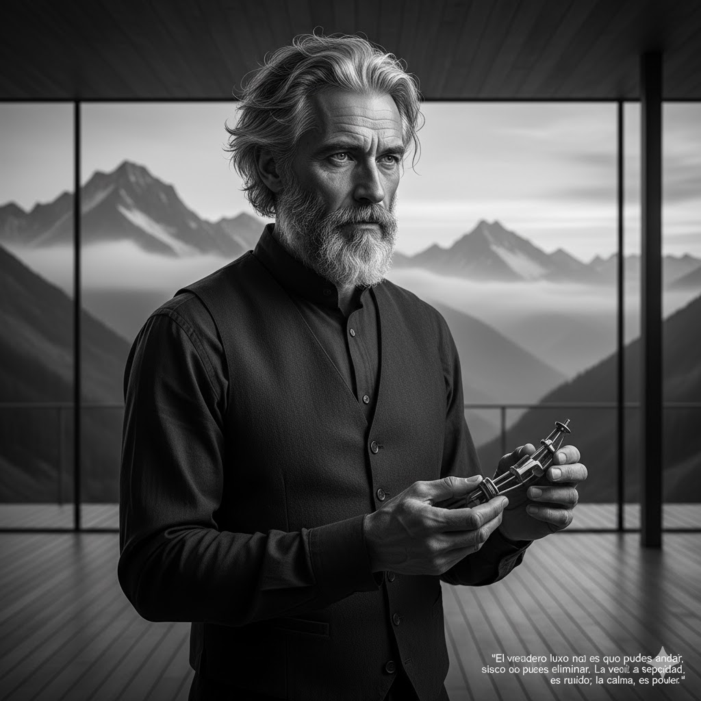

Silas Thorne, Fundador de Anora Motors
Datos Biográficos
Nombre Completo: Silas Elara Thorne
Fecha de Nacimiento: 12 de marzo de 1958
Lugar de Nacimiento: Un pequeño pueblo cerca de Múnich, Alemania
Los Primeros Años:
Obsesión por el Silencio
Silas Thorne no creció en un entorno automovilístico; sus padres eran músicos de orquesta.
Desde muy joven, sin embargo, desarrolló una fascinación inusual: el silencio perfecto en
movimiento.
Odiaba el rugido de los motores de combustión, encontrándolos "una cacofonía bárbara que interfiere
con el pensamiento puro."
Estudió Ingeniería Mecánica y Acústica en Berlín, graduándose con honores.
Epifanía y el Nacimiento de Anora
El punto de inflexión ocurrió en 1999. Mientras viajaba por las vastas llanuras de Islandia,
experimentó el silencio más profundo que jamás había conocido. Fue allí donde concibió un vehículo
que no solo fuera silencioso, sino que interactuara con el entorno de manera "armónica."
En 2003, utilizando una herencia inesperada de un tío lejano, fundó Anora Motors (del griego
*aithēr*, el elemento puro y brillante que llenaba el espacio por encima de la esfera terrestre). Su
objetivo no era construir un coche, sino una "cámara de reflexión móvil."
Innovaciones Clave y Filosofía
Anora Motors no se centró en la velocidad máxima o la potencia bruta. En su lugar, Thorne introdujo:
El Chasis de Absorción de Ruido (CAR)
Un marco compuesto de materiales nanofibrosos que, según los informes, absorbe más del 98% de la
resonancia de la carretera. Los primeros prototipos eran tan silenciosos que tuvieron que instalar
un "Simulador de Sonido de Carrocería" para cumplir con las regulaciones de seguridad vial en
algunos países.
El Diseño "Invisible"
Thorne creía que los coches debían integrarse en el paisaje, no dominarlo. Los modelos de Anora
(como
el "Nyx" o el "Zephyr") son conocidos por sus líneas fluidas, aerodinámicas y colores mate que
imitan los tonos del cielo y la tierra.
Filosofía "Anti-Lujo"
A pesar de los precios astronómicos, Thorne se negaba a usar madera de especies raras o cuero
tradicional. Los interiores están hechos de "biomateriales reciclados con textura de seda" y cuentan
con la mínima instrumentación, manteniendo el foco en la experiencia de conducción y la tranquilidad
del pasajero.
Legado y Misterio
Silas Thorne siempre ha sido una figura enigmática. Nunca ha dado una entrevista de prensa, y todas
las comunicaciones de Anora Motors se realizan a través de crípticas declaraciones que a menudo
citan a filósofos estoicos o poetas alemanes.
Se rumorea que vive en una remota instalación de I+D en los Alpes suizos, donde pasa la mayor parte
de su tiempo "escuchando el motor de la Tierra." Su verdadero legado no es solo la tecnología de
Anora, sino la redefinición del lujo automotriz, pasando de la ostentación ruidosa a la
introspección silenciosa. Se le conoce en la industria como **"El Alquimista del Asfalto."**